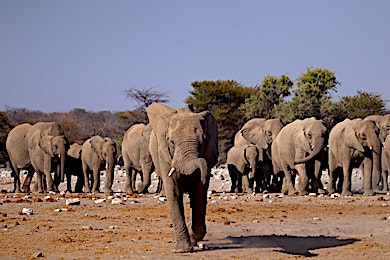

Keith Scarmato's it162 Portal
Welcome
I love meeting new people and discovering new places! I've backpacked most of the United States, all of Canada and Puerto Rico.
As a lifelong student of anthropology & archaeology, patterns of culture and human ecology are my passion.
A few key travel priorites still on my bucket list include treks to visit Olduvai Gorge & the Serengeti plains of East Africa; Turkey's ancient archeological sites including Gobekli Tepe (the world oldest temple) and a touring trip of medieval historical sights in Prague and Eastern Europe.
My 20+ years working in the hospitality/event management industry in 3 major US cities has allowed me to work with a broad spectrum of people and global cultures. I'm currently pursuing a career in web development & design while honing my skills in creative content writing.
An ideal career environment for me would combine my love of travel with my passion to write and work on creative web design & development projects in the fields of hospitality, cultural events, museums and archaeological tourism.